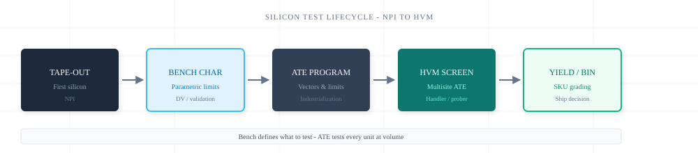
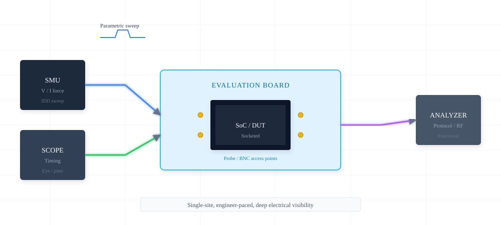
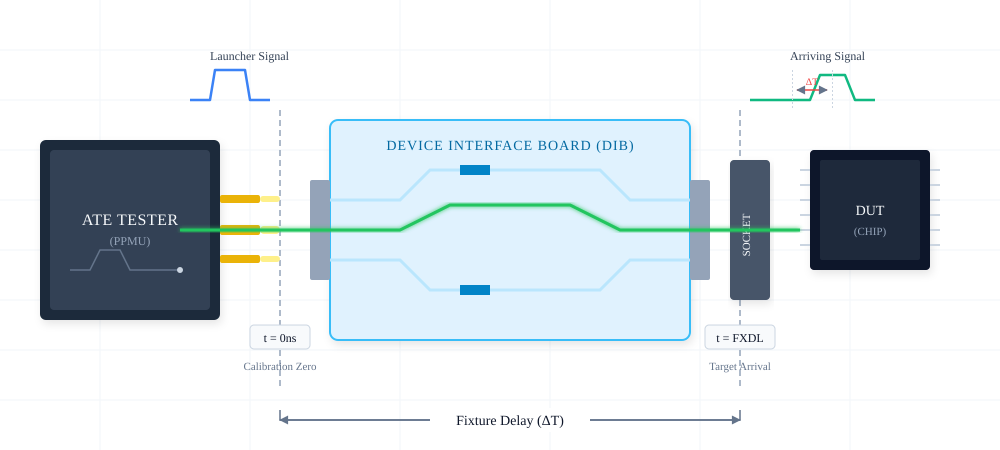
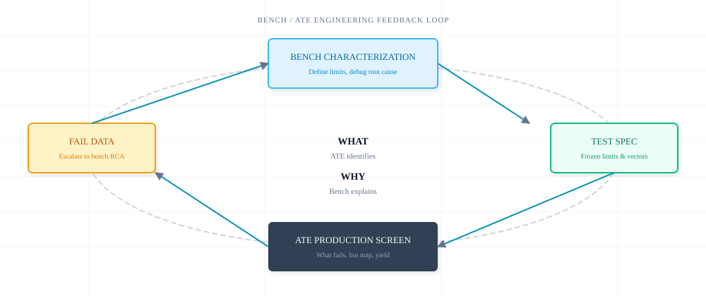
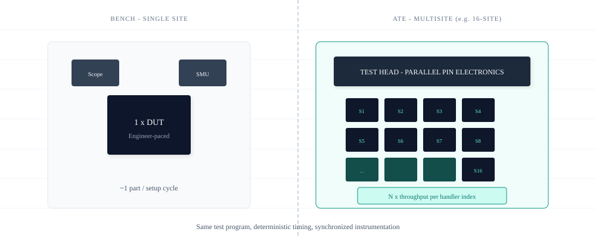
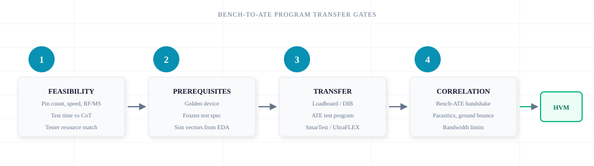

Overview
Introduction
Every SoC and processor follows a predictable test trajectory: electrical behavior is characterized on first silicon, test definitions are frozen, and production ATE screens every unit at volume. Bench and ATE are not alternatives — they are complementary capabilities in the same engineering flow.

During new product introduction (NPI), design validation engineers bring up die on evaluation boards, sweep parametric limits, and debug functional failures with scopes, source-measure units, and protocol analyzers. Once limits are proven and correlated, production test engineers industrialize those definitions on ATE — codifying voltage levels, timing sets, and pass/fail criteria into a test program that runs on multisite handlers at wafer sort and final test.
The handoff between these environments is where most schedule risk lives. A test strategy that treats bench and ATE as a relay — not a rivalry — reduces correlation surprises, accelerates yield learning, and protects time-to-market.
- DUT
- Device Under Test — the silicon die or packaged part being electrically exercised.
- NPI
- New Product Introduction — the phase from first silicon through design validation and test program readiness.
- HVM
- High-Volume Manufacturing — production-scale test with handlers, probers, and multisite parallelism.
- Yield
- Percentage of units passing production screens; bin maps reveal process and test health.
- Correlation
- Agreement between bench and ATE measurements on the same golden device within defined tolerance.
NPI & bring-up
Lab Characterization & Bench Debug
First silicon and prototype boards demand flexibility: ad-hoc probing, instrument swaps, and deep visibility into analog and digital behavior before any production fixture exists.

On the bench, engineers characterize IDD profiles, establish voltage and timing margins, and validate high-speed I/O with real instruments. A socketed DUT on a characterization loadboard provides direct BNC and probe access that production DIBs cannot replicate. This is where parametric limits — minimum operating voltage, maximum leakage, Fmax boundaries — are established and documented.
Bench strength is depth, not throughput. Setup variance between engineers, manual cable routing, and single-site pacing make the lab unsuitable for manufacturing screen. That constraint is intentional: the goal is electrical understanding, not cost-per-part economics.
- Strengths: Ad-hoc debug, waveform capture, root-cause analysis, design feedback
- Limits: Low throughput, setup-dependent repeatability, engineer-paced execution
Industrialization
Production ATE & High-Volume Screen
ATE replaces discrete bench instruments with integrated pin electronics — forcing levels, applying digital patterns, and measuring responses with deterministic, calibrated timing at the DUT pin.

On platforms such as Advantest V93000 or Teradyne UltraFLEX, pin electronics deliver stimuli and capture responses in nanoseconds. A custom loadboard routes tester channels to the DUT socket; a handler or prober presents parts for contact. The test program — patterns, levels, timing sets, and limits — executes identically on every index, every site, every lot.
This rigidity is a feature. Production test trades bench flexibility for repeatability, multisite parallelism, and cost-per-part economics. Fixture delay, pogo parasitics, and ground bounce become first-class design constraints — not afterthoughts.
- Strengths: Deterministic timing, multisite throughput, SPC-ready data, automated binning
- Limits: Fixed loadboard topology, limited ad-hoc debug, correlation dependency on bench golden data
Test flow
Complementary Roles in the Test Flow
Bench and ATE operate in a closed engineering loop: characterize, codify, screen, escalate, and refine.

The division of responsibility is clean. ATE answers what fails — bin maps, yield trends, site-to-site variation, and production escapes. Bench answers why it fails — silicon debug, margin analysis, and design-of-experiment on failing units pulled from the line.
When yield drops or a new failure mode appears in HVM, production test isolates the failing bin and returns units to the lab. Bench engineers reproduce the failure, identify root cause, and update limits or test coverage. The revised test program flows back to ATE. This loop is the operational backbone of mature silicon organizations.
Scale
Where ATE Delivers Scale
Three structural advantages make ATE indispensable once silicon moves beyond NPI into HVM.

Repeatability
Calibrated pin electronics, fixture delay compensation, and frozen test programs eliminate setup variance. Every unit sees identical stimulus — critical for SPC and yield trending across lots and fabs.
Integrated sync
Digital patterns, analog instruments, and RF sources share a unified timing backbone. Backplane synchronization replaces manual trigger cables — enabling ns-level correlation across hundreds of pins on a single SoC.
Multisite throughput
Eight, sixteen, or more sites test in parallel on one handler index. Test time per part drops proportionally while handler cadence sets the floor — the primary lever for cost-of-test at volume.
Schedule
Accelerating Time-to-Market
Test development that runs in parallel with silicon bring-up compresses the path from tape-out to HVM readiness.
Concurrent test development. Simulated vectors from EDA flows and architectural test plans can be ported to ATE test programs before first silicon arrives. SmarTest and UltraFLEX environments support pattern and timing development against simulation models — reducing the sequential wait for bench characterization to complete before ATE work begins.
Rapid yield learning. Production bin maps accumulate statistically significant data within hours of HVM start. SPC rules flag drift before escapes reach the field. Bench teams receive failing units with full datalog context — bin number, site, lot, and test step — accelerating root-cause isolation.
Automated performance binning. Process variation creates a distribution of Fmax, leakage, and analog performance across die. ATE screens sort units into SKU grades automatically — premium, standard, and downgrade bins — without manual per-part bench evaluation. This is performance binning and SKU grading at production scale.
Reference
Bench vs. ATE — Reference Comparison
A consolidated view for test strategy discussions, program reviews, and migration planning.
| Dimension | Bench | ATE |
|---|---|---|
| Lifecycle phase | NPI, first silicon, design validation | HVM, wafer sort, final test, SLT |
| Primary objective | Characterize behavior, establish limits, debug failures | Screen every unit, bin, track yield |
| Instrumentation | Scopes, SMUs, analyzers, ad-hoc scripts | Pin electronics, PPMU, digital patterns, RF modules |
| DUT interface | Eval board, socketed loadboard, probe needles | Custom DIB, pogo pins, handler socket |
| Timing | Instrument-limited, setup-dependent | Deterministic, calibrated to DUT pin (fixture delay) |
| Throughput | Single site, engineer-paced | Multisite parallel, handler-indexed |
| Repeatability | Moderate — cable and setup variance | High — frozen program, calibrated hardware |
| Debug depth | Deep — waveform, margin, DOE | Limited — bin and datalog, escalate to bench |
| Economics | Lower CapEx, higher cost per part | High CapEx, low cost per part at volume |
| Data output | Engineer notebooks, plots, reports | Bin maps, STDF, SPC, yield dashboards |
| Owning team | DV, silicon validation, characterization | Product test, production test engineering |
Migration
Bench-to-ATE Program Transfer
Moving from characterized limits to a production-ready test program follows four engineering gates. Skipping any gate invites correlation failure and schedule slip.

Correlation is not a one-time event. Process shifts, ECOs, and new failure modes require ongoing bench-ATE alignment. Teams that institutionalize this handshake — with defined tolerance bands, golden device refresh cycles, and escalation paths — maintain yield stability across product generations.